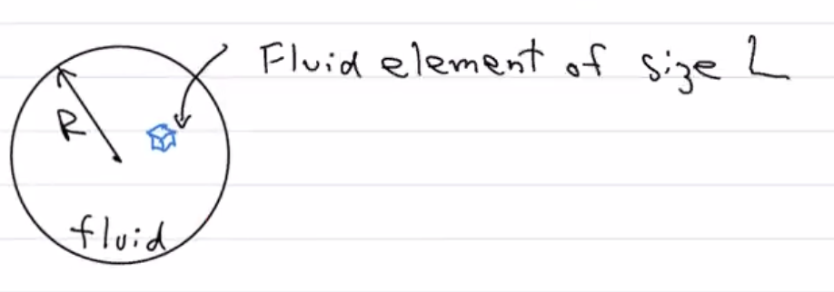

Basic Things about Fluids
Contents
Basic Things about Fluids¶
Fluid Approximation and the Fluid Element¶
We will start with three criteria (hand-wavy, order of magnitude criteria). When these three criteria are met, only then can we apply the fluid approximation. Let’s start by thinking about a fluid and fluid element (blue) of size \(L\):
{kind=link}
\(L\) has to be large enough to contain many atoms or molecules. Mathematically, this is: \(L \gg n^{-1/3}\), where \(n\) is the mean number density of atoms. Note that \(n^{-1/3}\) is roughly the mean atomic spacing.
\(L\) has to be small enough that the “fluid properties” (temperature \(T\), pressure \(P\), mass density \(\rho\), etc) we are looking at are constant within the fluid element. Mathematically, this is: \(L \ll R\) where \(R \sim \frac{Q}{|\vec{\nabla}Q|}\) where \(Q\) can be any of our relevant quantities above. Note that \(\vec{\nabla}\) is the gradient.
The fluid is “collisional,” meaning we have frequent interactions between particles, enough to “erase” the individual trajectories of particles in the fluid. These collisions can be anything – physical, Thomson scattering, anything – so long as they are frequent enough. Mathematically, we have: \(L \gg \lambda\), where \(\lambda\) is the mean free path of the fluid. In this limit, frequent interactions allow particle distributions to depend only on macroscopic properties.
Counterexamples and an Example of a Fluid¶
Counterexample A note about Criteria 3 – when does this note occur (i.e., when are they “collisionless?”)? For example, in cosmology, cold dark matter (CDM) is a collisionless fluid (so are neutrinos), meaning extremely weakly interaction. Another example are photons, but that sort of depends on what is happening in the Universe. Photons rapidly interact with Thomson and Compton scattering at high densities. Photons after recombination (or decoupling) are no longer a fluid.
Example Let’s look at an example for which we can find an \(L\) to make us a fluid. Consider the Galactic HI disk:
\(n \sim 0.1 \text{ cm}^{-3} \rightarrow n^{-1/3} \sim 2 \text{ cm}\).
\(R \sim 10 \text{ kpc} \rightarrow 3 \times 10^{22} \text{ cm}\).
\(\lambda \sim \frac{1}{n\sigma} \frac{1}{(0.1 \text{ cm}^{-3})\times(10^{-15} \text{ cm}^{-2})} \sim 10^{16} \text{ cm}\)
Putting these together, we don’t have any problem finding an \(L\) to obey Rules 1, 2, and 3! No problem!: \(10^{16} \text{ cm}^{2} \ll L \ll 3\times 10^{22} \text{ cm}\). Note that if we have a weaker interaction like Thomson scattering \(\sim 10^{-25} \text{ cm}^{2}\), we pretty soon cannot use fluid theory.